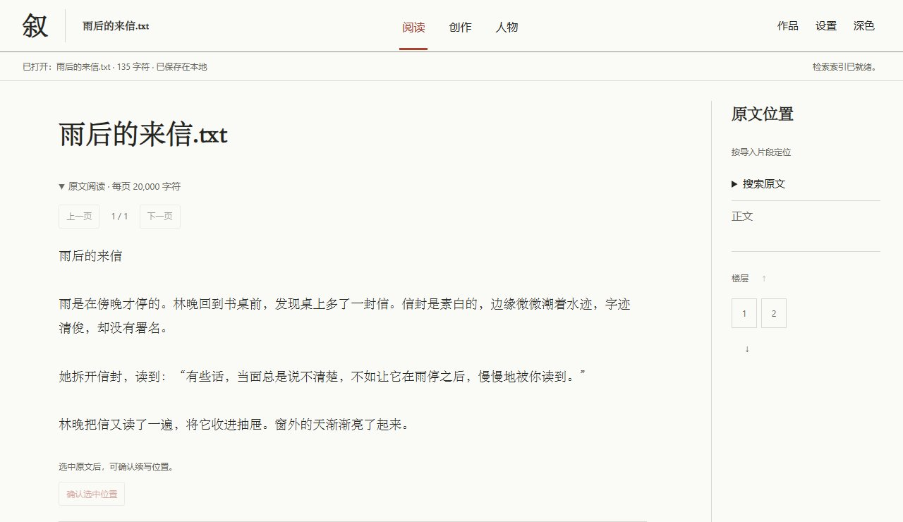

小说管理 Agent
长篇小说里的问题，回到原文里找答案。
阅读工作台

实际问答
问：这封信有没有署名？请引用原文回答。
答：没有署名。原文写“信封是素白的，边缘微微潮着水迹，字迹清俊，却没有署名”[片段1]。
我的实现
混合检索。关键词与向量候选经 RRF 融合、去重，并补充邻近原文。向量服务不可用时回退关键词检索。
引用校验。核对引文、明确整数与已有角色卡姓名，保留回答并标出疑点，便于回到原文复核。
阅读范围。按阅读进度提取人物资料、生成灵感与续写候选稿，支持提示词保存与候选稿管理。
验证
| 方法 | recall@5 |
|---|---|
| 纯词频基线 | 31/50 |
| 现有关键词检索 | 32/50 |
| 混合检索实际入口 | 37/50 |
445,355 字符 · 372 个片段 · 50 道题。混合检索 recall@5 达到 74%，较关键词检索净增 5 道命中。